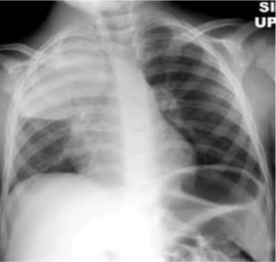

Mulher de 32 anos, tosse seca há seis meses. Sem febre, sem hemoptise, sem expectoração. Bom estado geral, ausculta limpa. Traz uma radiografia de tórax feita há uma semana — ainda não interpretada, porque a emergência estava sobrecarregada. Qual a alteração nessa radiografia, e como investigar?
O nódulo que quase passou batido
Todo nódulo solitário precisa de resposta, não de palpite
Numa olhada rápida, o achado passa batido. O parênquima parece limpo. Só quando o olho é treinado — ou quando alguém coloca a seta de referência — aparece uma lesão pequena, arredondada, isolada, plantada no meio do pulmão. Tudo ao redor é parênquima aparentemente normal. Um nódulo único, sozinho. Esse é o nódulo pulmonar solitário.
Por que isso importa tanto a ponto de virar caso-âncora? Porque o câncer de pulmão é o câncer que mais mata no Brasil e no mundo. Não é o que mais incide em todos os recortes — é o que mais mata. E é justamente por isso que a regra é dura e sem exceção: todo nódulo pulmonar solitário precisa ser investigado. Não existe nódulo "que com certeza não é nada" só de olhar.
A pergunta que comanda tudo: “será que é câncer?”
Diante de um nódulo no pulmão, a pergunta obrigatória — a que vai te acompanhar do começo ao fim — é sempre a mesma: "será que é câncer?". E a resposta nunca é por presunção. É por investigação. Você não decide pelo paciente parecer saudável, pela idade, pela cara. Você investiga, com método. A paciente de 32 anos com tosse seca pode ser exatamente o que parece — um nada — ou a exceção que custa caro se ignorada.
Toque no elemento desenhado para ver a leitura.

O nódulo silencioso é o achado incidental mais traiçoeiro do tórax. Quem aprende a vê-lo e a interrogá-lo encontra câncer ainda curável; quem o ignora encontra câncer tarde demais.
- Por que a frase "ela é jovem e não fuma" não basta para encerrar a investigação?
- O que diferencia "nódulo" de "infiltrado" ou "consolidação" no seu olhar sobre a radiografia?
- Se você fosse a equipe da emergência, o que mudaria pra essa radiografia não ficar sem laudo?
Quiz — fixação
-
A definição operacional de nódulo pulmonar solitário inclui:
Gabarito: A. O NPS é por definição lesão única, pequena e cercada de parênquima normal.
Por que cair na B: lesões múltiplas mudam o raciocínio inteiro — pensa-se em metástases ou doença granulomatosa difusa, não em NPS.
-
Como a paciente é jovem, não fumante e está em bom estado geral, é seguro não investigar o nódulo.
Falso. Câncer de pulmão é o que mais mata; todo NPS exige investigação. Baixo risco reduz a probabilidade pré-teste, mas não a zera.
-
Diante de qualquer nódulo pulmonar, a pergunta obrigatória que organiza a investigação é "_______?".
Gabarito: B. "Será que é câncer?" é a pergunta-mestra de toda a investigação do NPS — as outras são derivadas dela.